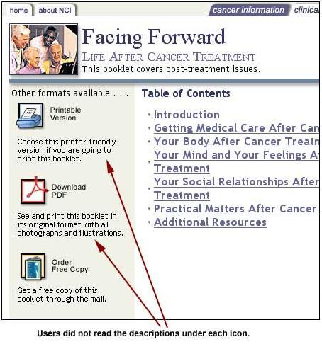

We discuss here the results of usability tests on two booklets which were transferred from print to the Web. The booklets provide the public with basic information on various cancers, cancer treatment, and other cancer-related topics. The booklets were written by the National Cancer Institute's Office of Education and Special Initiatives (NCI OESI).
Web-based booklets versus print booklets
Booklets that work well in print do not always work well on the Web because on the Web:
- Users see much less of a page than they do on paper
- Users cannot flip through pages to find something they are looking for
- Users are slower at reading from the computer screen and often find they get eyestrain. This may be because of the position of the screen, the way we sit at the computer, or the difference in the way the light is reflected with monitors compared to paper
Therefore, users look for information differently on the Web and are often reluctant to read large blocks of text from the screen. So, if they find a booklet interesting but too much to deal with on the Web, users might want to print it out or even order the paper copy.
Goals of the Usability Tests
We wanted to find out more about issues that may make an online booklet more usable, such as:
- Will users have more success using a "detailed" table of contents (a set of links showing primary and secondary headings) or a "minimal" table of contents (a set of links showing only primary headings)?
- What makes a heading informative enough to help users find the information they are looking for?
- Do anchor links (links at the top of a page that take users to information further down that page) help users?
- Will users scroll through long pages of text? Can they easily find what they are looking for by scrolling?
- How much of a booklet do users want to print at one time?
- How much explanatory text is needed to go with icons that indicate other ways of getting a booklet? Icons include "print", "PDF," and "order" (for a paper copy).
What Was Tested
We tested two online booklets: Chemotherapy and You and Facing Forward: Life After Cancer Treatment. Primary audiences for the booklets include patients, their family, and friends. The secondary audience is the health care professionals who provide the booklets to the patients.
Both online booklets are written at the eighth-grade reading level.
Chemotherapy and You has information on what to expect during chemotherapy and what patients can do to take care of themselves before and after treatment. Facing Forward: Life After Cancer Treatment addresses issues faced by patients who have completed treatment.
Who Participated in the Usability Tests
Fourteen participants tested the booklets:
- 9 clinical nurses
- 1 clinical assistant
- 2 cancer patients
- 2 family members of cancer patients
Most clinicians were very Web savvy. The patients and their family members were not as Web savvy.
Methodology Used
Each participant used the two online booklets for about an hour spending one half-hour on each booklet. During this time they:
- Answered questions on who they think the booklets are for, what they think the booklets are about, and what they would do with them
- Used each online booklet to search for specific information.
- Answered questions about their impressions of the online booklets
- Answered questions specifically about the format of the icons in the booklets, the format they prefer, and reasons for their preference.
Lessons Learned
Navigation
1. Provide a detailed table of contents to help users find information faster, to help them understand the range of topics covered by the booklet, and to increase user satisfaction.
Comment: The "detailed" table of contents is a set of links showing both primary and secondary headings. In our usability tests, we found that the detailed table of contents gave participants a better idea of what they could find in each section and allowed them to get to the information directly and quickly.
When looking for information, users who were not sure what primary heading they would find it under could scan the secondary headings directly and select the link of interest to them. This helped them get to information faster. Most participants who used the detailed table of contents commented on how much they liked it.
Example 2a
2. Provide links to all content headings on the top of a page (anchor links) to allow users to get to information directly and quickly.
Comment: An anchor link is a link that takes you to another part of the same page. On the second level pages of Chemotherapy and You, participants could click to all the headings on the page via a set of anchor links on the top of the page. (See example 2a below.)
On a long page with a large amount of information, having the content headings as links at the top of the page allows users to click to information directly, reducing scrolling and scanning. In our usability tests, users often got frustrated when they had to scroll or scan a lot to find information. Also important, these anchor links let users grasp immediately what information the page contains. Keep in mind that for such anchor links to work well, the headings must be easily understandable and must be descriptive of the content.
Example 2a
Example 2b
Page Layout
3. Keep key links and information above the first screen fold (where the screen ends) or provide an indication that key data is below the screen fold.
Comment: Half of the participants took white space at the bottom of the screen to mean that there was nothing below that on the page. They did not scroll down far enough and hence missed an important link, "Detailed Table of Contents". The reason: At 800 x 600 resolution (the resolution most users have their computer set at), the first screen fold of information cuts off at the table of contents link "Conclusion." This indicated to some participants that the Table of Contents ended there, and they did not scroll further down the page. Other participants, who did scroll down a little, did not realize that there was a link below the table of contents' last link, "Resources," because of the amount of white space separating this and the "Detailed Table of Contents."
Content
4. Organize information in a way that users understand, and then write descriptive headings.
Comment: When chunking information, consider the logical placement of information from the users' perspective. For example, in Facing Forward while 'Practical Matters After Cancer Treatment' might have seemed like a reasonable place to have information on support organizations for cancer patients, participants in our usability tests did not expect it there. An overwhelming number of participants thought they would find support organizations under 'Additional Resources.'
Once the information is chunked appropriately, write headings that are descriptive of the information. On the Web, page headings become links out of context on a previous page - like the table of contents of a printed booklet. Therefore, headings should clearly explain to users what page they are about to link to.
Example 4a
Example 4b
5. Use large fonts and black text on a white background to enhance the readability of content.
Comment: Many participants commented that they found the booklets easy to read online because of the font sizes and colors (black text on white background). Research has shown that font sizes greater than ten points (preferably twelve points) and black text on a white background elicit better reading performance, in general.
6. Use terms that are clear and readily understandable by all audiences. Avoid jargon.
Comment: The patients and family members who participated in the testing were not familiar with the term 'complementary therapy,' a key link to critical health information. Only one patient, who had been in treatment for several years, knew what it means. (Complementary therapies are alternate therapies, such as massage therapy, yoga, etc.)
To find out the best words to use for uncommon terms and phrases, you can use surveys, interviews and other data collection techniques.
For more information, learn more about user research.
Printing
7. a. Provide users with the option to print sections of a large booklet.
b. Provide users with an indication of the number of pages that will be printed.
Comment: Participants did not always want to print out the entire booklet. They wanted to be able to print out just sections of the booklets. They gave reasons like these:
- They may be interested in reading just parts of the booklet.
- It might take time to print out all the pages. (They had no idea how many pages would be printed.)
- They did not want to waste paper.
8. Provide options such as printing, downloading, and ordering on all Web pages of an online booklet. Group these options together, across the top of the Web page.
Comment: Icons for printing, downloading, and ordering each online booklet were available on the home page as well as across the top of all Web pages in the booklet. When asked how they would print or order the booklet, most participants (ten) used the icons that were across the top of the second-level Web page they were on.
In the usability tests for these online booklets, we found that grouping the icons for print, PDF, and order together across the top of the Web page worked well for the participants. Participants noticed the icons immediately. In usability tests of other Web sites, we have tested various other ways of displaying these options. In comparison to those other Web sites, the grouping and positioning of the icons in these booklets was very effective.
Use of Icons
9. Do not provide lengthy text with an icon if the icon itself is readily recognizable or the icon along with its label is easily understandable.
Comment: On the Web, users tend to skip over text they consider non-essential. In our usability tests, participants did not read the descriptions under the icons for "Printable Version," "Download PDF," and "Order Free Copy." Most of them just chose an icon they recognized; others read the icon labels but not the text descriptions under the icons.
